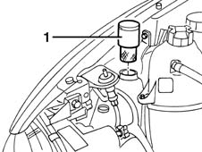

5050A14 reservoir plug (in engine bay) or windscreen washer fluid level sensor - check and top up if necessary
- Path
- Procedures > 50 AUXILIARY UNITS > 5050 SCREEN WASHERS AND HEADLAMP WASH/WIPE > 5050A WINDSCREEN AND HEADLAMP WASHER RESERVOIR > 5050A14 reservoir plug (in engine bay) or windscreen washer fluid level sensor - check and top up if necessary
- Kind
- repair procedure (removal / refitting; the operation number is the code)
- Applies to
- all engines; all production periods
- Interactive page
- https://sloeber94.github.io/elrnDB-fMltpl/en/#/2891842
Applies to: all engines; all production periods
1. Open the bonnet lid and remove the reservoir cap and filler.

Applies to: all engines; all production periods
Check that the cap and filler are not damaged and that the filter is not blocked.
Fit the cap and filler in the housing.